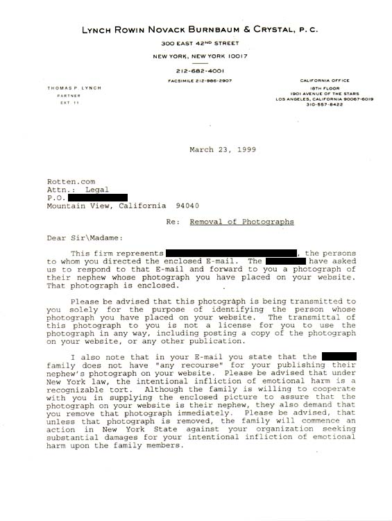
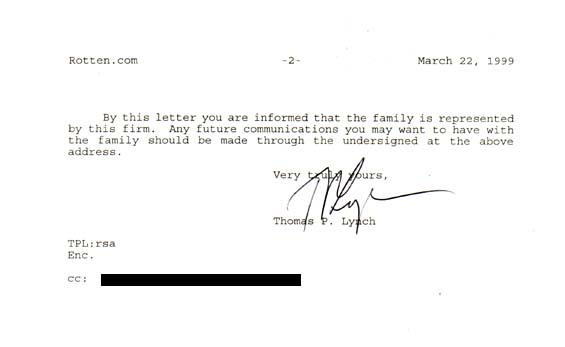

cease & desist letter #4 - Loser Meets Train
An archive of disturbing illustration
Part I. Cause
A picture was posted in one of the E.M.T. galleries depicting
a young man who placed his head on a public train tracks, neatly
severing it.
This family claims one of our photos was their nephew. It
was difficult to tell from the picture whether this is true;
we're not even sure it's from the same state.
Because, we've noticed, it's often very difficult to tell if a person
in one of our pictures is someone you know. On more than one occasion,
people have emailed us convinced they knew victims in photos, assuming
the photos came from the United States. They did not, the photos
in question were from Mexico.


Part II. Conclusion
Photo was removed and replaced with new content. We ask that, in the
future, this family conduct their suicides in a less public manner.
[return to rotten.com]
|